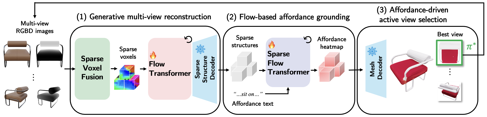
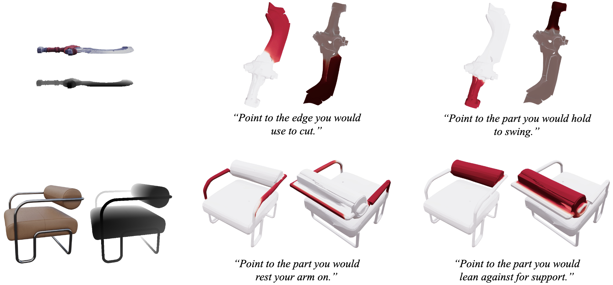
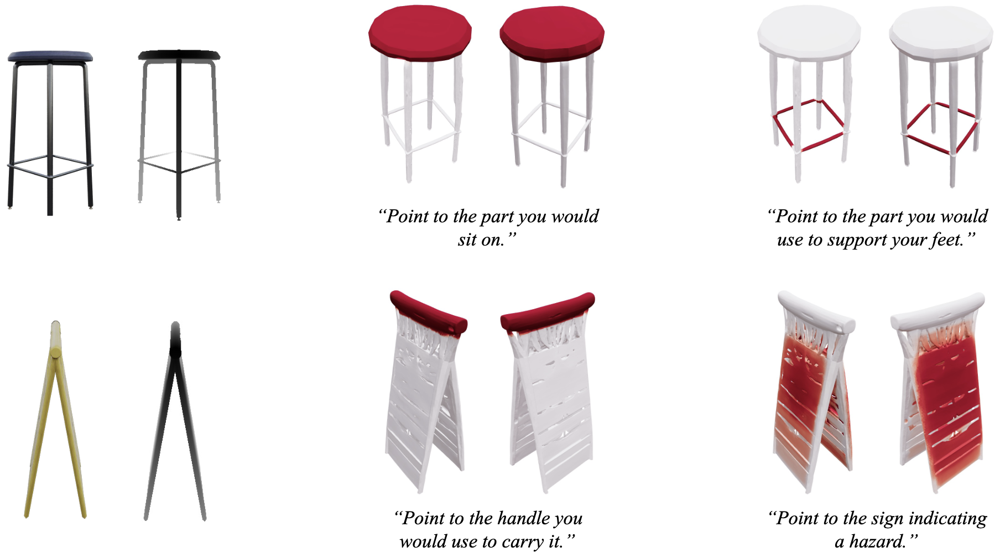
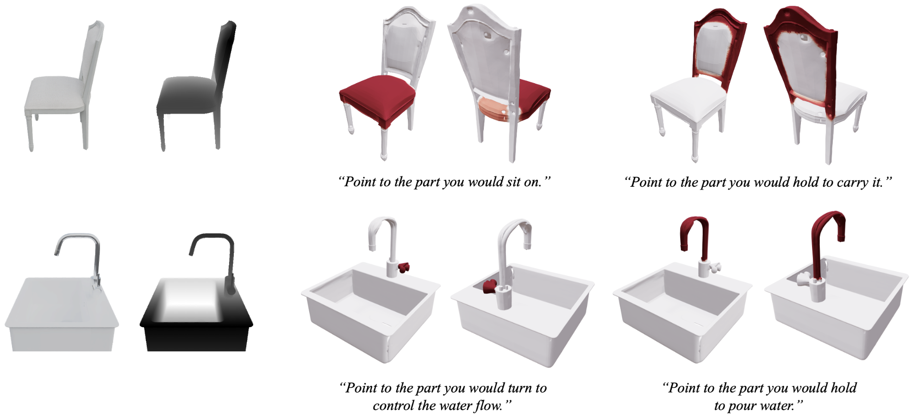
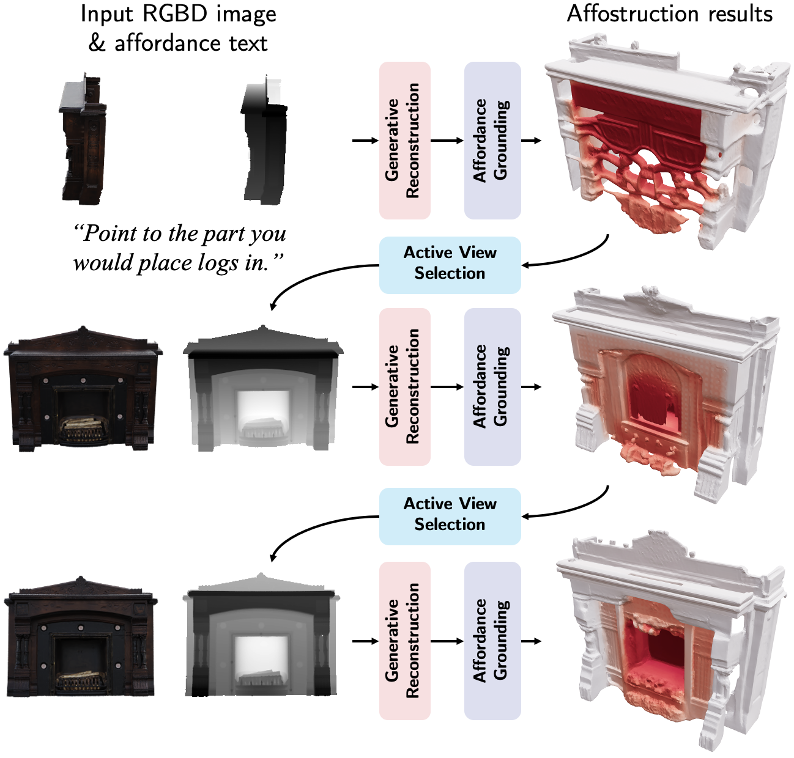

This paper addresses the problem of affordance grounding from RGBD images of an object, which aims to localize surface regions corresponding to a text query that describes an action on the object. While existing methods predict affordance regions only on visible surfaces, we propose Affostruction, a generative framework that reconstructs complete geometry from partial observations and grounds affordances on the full shape including unobserved regions. We make three core contributions: generative multi-view reconstruction via sparse voxel fusion that extrapolates unseen geometry while maintaining constant token complexity, flow-based affordance grounding that captures inherent ambiguity in affordance distributions, and affordance-driven active view selection that leverages predicted affordances for intelligent viewpoint sampling. Affostruction achieves 19.1 aIoU on affordance grounding (40.4% improvement) and 32.67 IoU for 3D reconstruction (67.7% improvement), enabling accurate affordance prediction on complete shapes.

| Method | Depth | Geometry | Appearance | |||||
|---|---|---|---|---|---|---|---|---|
| IoU↑ | CD↓ | F-score↑ | PSNR-N↑ | LPIPS-N↓ | PSNR↑ | LPIPS↓ | ||
| Shap-E [1] | 6.39 | 0.6724 | 0.0096 | 16.16 | 0.3014 | 13.07 | 0.4358 | |
| InstantMesh [2] | 13.68 | 0.4063 | 0.0391 | 20.46 | 0.2463 | 16.59 | 0.2989 | |
| LGM [3] | 9.39 | 0.5660 | 0.0267 | 17.03 | 0.3974 | 13.59 | 0.4126 | |
| TRELLIS [4] | 19.49 | 0.3694 | 0.0496 | 20.96 | 0.2089 | 17.61 | 0.2435 | |
| MCC [5] | ✓ | 21.11 | 0.3299 | 0.0648 | N/A | N/A | N/A | N/A |
| Affostruction (ours) | ✓ | 32.67 | 0.2427 | 0.0997 | 22.64 | 0.1421 | 18.84 | 0.1922 |
| Method | aIoU↑ | AUC↑ | SIM↑ | MAE↓ |
|---|---|---|---|---|
| OpenAD [6] | 3.1 | 64.8 | 0.329 | 0.150 |
| PointRefer [7] | 10.5 | 76.1 | 0.405 | 0.120 |
| Espresso-3D [8] | 13.6 | 79.0 | 0.429 | 0.111 |
| Affostruction (ours) | 19.1 | 72.0 | 0.426 | 0.217 |
| Method | Recon. | aIoU↑ | aCD↓ |
|---|---|---|---|
| OpenAD [6] | 0.38 | 0.4165 | |
| PointRefer [7] | 0.53 | 0.3072 | |
| Espresso-3D [8] | 0.60 | 0.2885 | |
| TRELLIS [4] + OpenAD [6] | ✓ | 1.49 | 0.1671 |
| TRELLIS [4] + PointRefer [7] | ✓ | 2.05 | 0.1576 |
| TRELLIS [4] + Espresso-3D [8] | ✓ | 2.23 | 0.1568 |
| MCC [5] + OpenAD [6] | ✓ | 3.34 | 0.1503 |
| MCC [5] + PointRefer [7] | ✓ | 4.19 | 0.1397 |
| MCC [5] + Espresso-3D [8] | ✓ | 4.74 | 0.1354 |
| Affostruction (ours) | ✓ | 9.26 | 0.1044 |




[1] H. Jun and A. Nichol, "Shap-E: Generating Conditional 3D Implicit Functions," arXiv preprint arXiv:2305.02463, 2023.
[2] J. Xu, W. Cheng, Y. Gao, X. Wang, S. Gao, and Y. Shan, "InstantMesh: Efficient 3D Mesh Generation from a Single Image with Sparse-View Large Reconstruction Models," arXiv preprint arXiv:2404.07191, 2024.
[3] J. Tang, Z. Ren, H. Zhou, Z. Liu, and G. Zeng, "LGM: Large Multi-View Gaussian Model for High-Resolution 3D Content Creation," in ECCV, 2024.
[4] J. Xiang, X. Zeng, Z. Wu, Y. Lu, Y. Li, M.-H. Chen, and S.-H. Zhang, "TRELLIS: Structured 3D Latents for Scalable and Versatile 3D Generation," in CVPR, 2025.
[5] C.-Y. Wu, J. Johnson, J. Malik, C. Feichtenhofer, and G. Gkioxari, "Multiview Compressive Coding for 3D Reconstruction," in CVPR, 2023.
[6] T. Nguyen, M. N. Vu, A. Vuong, D. Nguyen, T. Vo, N. Le, and A. Nguyen, "Open-Vocabulary Affordance Detection in 3D Point Clouds," in IROS, 2023.
[7] T. Nguyen, M. N. Vu, B. Huang, T. V. Vo, V. Truong, N. Le, T. Vo, B. Le, and A. Nguyen, "Language-Conditioned Affordance-Pose Detection in 3D Point Clouds," in ICRA, 2024.
[8] J. Lee, E. Park, C. Park, D. Kang, and M. Cho, "Affogato: Learning Open-Vocabulary Affordance Grounding with Automated Data Generation at Scale," arXiv preprint arXiv:2506.12009, 2025.
@inproceedings{park2026affostruction,
title={Affostruction: 3D Affordance Grounding with Generative Reconstruction},
author={Park, Chunghyun and Lee, Seunghyeon and Cho, Minsu},
booktitle={Proceedings of the IEEE/CVF Conference on Computer Vision and Pattern Recognition (CVPR)},
year={2026},
}